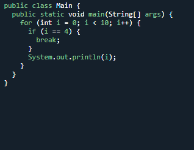
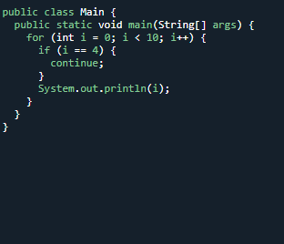
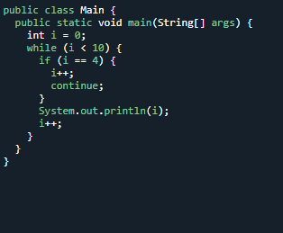

JAVA BREAK
Java Break
You have already seen the break statement used in an earlier chapter of this tutorial. It was used to "jump out" of a switch statement.
The break statement can also be used to jump out of a loop.
This example stops the loop when i is equal to 4:

Java Continue
The continue statement breaks one iteration (in the loop), if a specified condition occurs, and continues with the next iteration in the loop.
This example skips the value of 4:

Break and Continue
